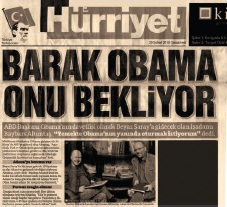
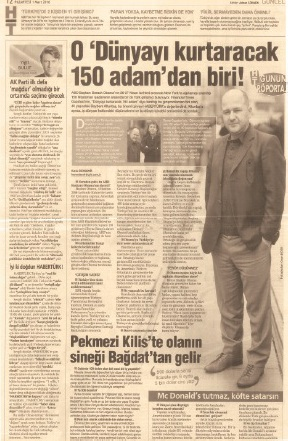
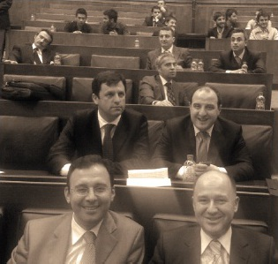
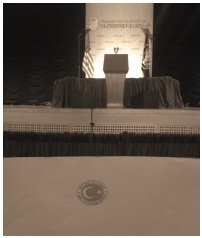
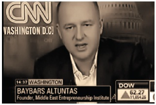

“Ben Amerika Birleşik Devletleri Adana Konsolosluğundan arıyorum, Baybars Altuntaş’la mı görüşüyorum ?”
“Buyurunuz ben Baybars Altuntaş.”
‘’Baybars Bey, fazla vaktinizi almak istemem. Hemen konuya girmek istiyorum. Başkan Obama sizi Washington’a davet ediyor. Ankara’daki Büyükelçiliğimiz size Başkan Obama’nın davetini iletmemi istedi. E-mail adresinizi verirseniz, size biraz sonra davet mektubunu göndermek isterim. Mektubu aldıktan sonra benimle irtibata geçerseniz sizinle konuşmak istediğim çok şey var.’’
Açıkçası, bu telefondan ilk anda hemen hemen hiçbir şey anlamadım. Ne zirvesi? Ne Washington’u?
Obama neden beni davet ediyor? ABD’li yetkilinin benimle konuşacağı pek çok şey nedir? Ve neden ben?
Yarım saat sonra Amerika Birleşik Devletleri Ankara Büyükelçisi James F. Jeffrey’in yardımcısı Maslahatgüzar Douglas Siliman imzalı ve Başkan Obama’nın beni Washington’a davet ettiğini belirten mektup e-mail yoluyla geliyor.
Dışarıdaki yağmur olanca hızıyla devam ediyor. Toros Dağları’nı seyrederken olup bitenin aklımı karmakarışık ettiğini fark ediyorum.
Elimde Başkan’ın davet mektubu, kahvemi yudumlayarak yaklaşık bir saat camdan dışarıya bakıp kalıyorum. İçimde fırtına öncesi bir sessizlik, sükûnet içindeyim.
Bu anların çok önemli şeylere gebe olduğunu hissediyorum.
-Baybars Bey! Nasılsınız? Mektubu aldınız mı?
-Çok teşekkürler. Mektubu aldım. Konuşmak isterim.
-Yarın sabah Ziyapaşa Starbucks’ta bir kahveye ne dersiniz?
-Saat 9.30’da oradayım.
-Harika, görüşmek üzere Baybars Bey.
700 Aday Arasından
Önce girişimci
olup olmadığınıza
karar verin
Girişimciliğe ilk adımınızı kendinizi tanıyarak atın. Bir şeyi istemek başka bir şey, istediğin şeye sahip olabilecek yetilere sahip olmak başka bir şey. Kendiniz hakkında objektif değerlendirmeler yaparken, başkalarının sizin hakkınızdaki düşüncelerini de göz ardı etmeyin. Kurslarımda aşağıdaki 3 soruyu mutlaka kursiyerlerime sorarım, çünkü aşağıdaki 3 soruya vereceğiniz cevaplar bir anlamda sizin girişimcilik haritanızın istikametini de ortaya çıkaracaktır. Kendi işinizin patronu olmanın dayanılmaz büyüsüne kapılırken beraberinizde ailenizin ve size güvenerek sizin işinizde çalışmaya karar vermiş pek çok insanın sorumluluğunu da sırtınıza aldığınızı unutmayın.
1.Çocukluğunuzda ‘büyüyünce bu çocuk işadamı olacak’ veya ‘bu çocuk büyüyünce çok zengin olacak’ gibi laflar duydunuz mu?
2.Daha bağımsız olmayı, kendi kendinize kararlar almayı, daha fazla para kazanmayı gerçekten istiyor musunuz ?
3.Stres ve baskıya dayanaklı mısınız? Ters bir durumda çabuk mu çökersiniz? Yoksa kendi kendinizi hemen olumlu yönde motive edebilir misiniz ?
Starbucks’ta günün kahvesini sütsüz ve şekersiz bir şekilde yudumlamaya başladım. Hemen konuya girdim.
“Nedir bu işin aslı astarı? Nedir bu zirve?”
“Baybars Bey, bu zirve çok önemli bir zirve. ‘Presidential Summit’, yani ‘Başkanlık Zirvesi’. Beyaz Saray organize ediyor, tüm davetliler teker teker Beyaz Saray tarafından belirlendi. Sanırım Türkiye’den 700 aday arasından seçildiniz. Öncelikle sizi tebrik etmek isterim, çok zor bir işi başardınız. Artık dünyanın en önemli girişimcilerinden birisiniz.”
“Başkan Obama Kahire Üniversitesi'nde bir konuşma yaptı ve 21.yüzyılı girişimcilik yüzyılı ilan etti. “Dünyada barışın sağlanması ve ABD halkı ile Müslüman halklar arasındaki bağları derinleştirmek için girişimcilere çok görevler düşecek” dedi. Başkan, dünyanın içine düştüğü bu krizden çıkmak için de girişimcilere büyük görevler düştüğüne inanıyor. Bu yüzden, 21.yüzyılın girişimcilik adına en önemli olayı olarak tamamen Başkan Obama’nın yönetiminde bir Başkanlık Girişimcilik Zirvesi düzenliyor, Washington’da. Hazırlıklara hemen başlamalısınız, çünkü fazla vakit kalmadı”
“Beni kim aday gösterdi, öğrenebilir miyim?”
“Baybars Bey, Beyaz Saray’dan ABD’nin dünyadaki tüm büyükelçiliklerine yazı geldi.
“Adaylarınızı belirleyin, seçimi biz yapacağız” dediler. Sanırım Türkiye'den 700 aday belirlenerek Beyaz Saray'a bildirildi.
* * *
Açıkçası o ana kadar Başkan Obama’nın Kahire konuşmasını dinlememiştim. Ofise gidince hemen internetten o konuşmayı buldum. Konuşmanın başlığı çok ilginç geldi bana.
“A New Beginning” – “Yeni Bir Başlangıç”
Haziran 2009’da Orta Doğu’nun göbeğinde, Hüsnü Mübarek'in yanında, Başkan Obama “Yeni Bir Başlangıç”tan bahsediyordu, bundan tam 2 yıl önce Kahire’de. Sanki bugünleri görmüşçesine...
Büyükelçi Jeffrey Benim İçin Geliyor
Adana Ticaret Odası Başkanı aradı; “Onurunuza bir resepsiyon vermek istiyoruz Baybars Bey. Düşündüğünüz Orta Doğu Girişimcilik Enstitüsü’nü Adana’ya kurabilirsiniz. Adana olarak sizi desteklemek isteriz.’’
9 Şubat 2010 Salı akşamı Adana Ticaret Odası’nda benim onuruma bir resepsiyon veriliyor. Adana’nın tüm önde gelenleri bu resepsiyonda. Şaşırıyorum. Resepsiyon alanı tıka basa dolu, protokol sıralarında oturacak yer yok, onuruma düzenlenen resepsiyonu en arka koltuklara geçerek izlemeye başlıyorum.
Biraz sonra salonda pek çok polis ve güvenlik görevlisi dolaşmaya başlıyor. Anlam veremediğim bu kalabalık bir anda geri çekiliyor ve içeriye Amerika Birleşik Devletleri Büyükelçisi James Jeffrey ve eşi giriyor. Gerçekten olup bitenler inanılır gibi değil.

Büyükelçi Jeffrey, bu resepsiyon için Ankara’dan gelmişti. Tam 40 dakika süren ve Türkçe olarak yaptığı konuşmasında bana övgüler yağdırıyor ve girişimciliğin dünya barışı için önemini vurguluyordu.
Konuşma sırası bana gelince ‘Ortadoğu Girişimcilik Enstitüsü’nün sadece Türkiye değil, Orta Doğu barışına da hizmet edeceğini belirterek Büyükelçi’den beklenmedik bir talepte bulunuyorum:
“Beyaz Saray’daki yemekte, başkan Obama’nın yanındaki iskemleye oturabilirsem, Orta Doğu’da çok şeylerin değiştiğini göreceksiniz Sayın Büyükelçi.”
Salonda bir kahkaha tufanı kopuyor. Herkes “espri”ye gülüyor. Hatta Hürriyet gazetesi bunu birinci sayfadan “Günün Esprisi” başlığıyla duyuruyor.
Salonda gülmeyen sadece 2 kişi var; Büyükelçi Jeffrey ve ben...
2
Diyanet İşleri Başkanı’nı ziyaret ettim, kendimi Başbakanımız Erdoğan’ın karşısında buldum !
‘’Durumu anladım. Sanırım bu akşam Sayın Başbakanımızla görüşeceğim. İlk uçakla Ankara’ya indim.Direkt Mehmet Kasapoğlu’nun ofisine gittim. Oradan Mehmet Kasapoğlu ile beraber Türkiye Büyük Millet Meclisi’ne geçtik. Saat 23.00 gibi Meclisin iktidar partisi vekillerine ayrılmış bölümündeyim. Açıkçası her halde meclisin tarihinde tüm milletvekillerini bir arada görebileceğiniz çok az zamanlar vardır. Anayasa görüşmeleri ve refarandum oylamaları dolayısıyla tüm bakanlar ve milletvekilleri ile aynı salondayım.’’
Manisa’da bir bankanın sponsorluğunda düzenlediğimiz bir girişimcilik zirvesinde tanışmıştık Başkan’la.Manisa’ya âşık, doğma büyüme Manisalı, çok iyi bir insandı Manisa Belediye Başkanı Bülent Kar. Geçen zaman içinde ne zaman İzmir’e gitsem, Başkan’a “alo” der ve Manisa’nın o güzel köftelerinden yerdik hep aynı yerde. Bu sefer seçimleri kazanamamış ve avukatlık işine geri dönmüştü. Ancak, ben iletişimimi koparmamıştım Başkan’la.
“Başkan” dedim, “Diyanet İşleri Başkanı’nı tanıyor musunuz? Kendisiyle görüşmem gereken önemli bir konu var. Randevu alabilir misiniz benim için, rica etsem...”
“Baybars Bey, hayırdır? Diyanet İşleri Başkanı ile ne işiniz olabilir sizin?”
Doğru söylüyordu Başkan. Diyanet İşleri Başkanı’yla ne işim olabilirdi ki? Hiç de dindar bir görüntüsü olmayan, Boğaziçi Üniversitesi’nden mezun, ceketinde mendili eksik olmayan bir insanın Diyanet İşleri Başkanı ile ne işi olabilirdi ki?
“Ankara’da toplantı sırasında söyleyebilirim ne işimin olduğunu Başkan. Ancak şu kadarını söyleyebilirim ki kırk yıl düşünseniz aklınıza gelmeyecek bir konu.”
“Diyanet İşleri Başkanı ben belediye başkanı iken Manisa’ya gelmişti,tanışırım kendisiyle. Ayrıca özel kalem müdürü Ünal Bey de Manisalıdır. Kendisini cebinden arayıp randevumuzu alalım.”
Başkan, Diyanet İşleri Başkanı’nın Manisalı Özel Kalem Müdürü Ünal Bey’i aradı. Ünal Bey hemen randevu defterine baktı,“Bu hafta çok yoğun Başkan’ın programı ama önümüzdeki hafta rahatlıyor. Pazartesi günü saat 10’da bekliyoruz.” Anladım ki, Başkan’ın Ankara’da prestiji yüksek.
“Başkan, siz de benimle Ankara’ya gelip bu randevuya katılırsanız çok sevinirim. Hem de değişiklik olmuş olur sizin için.”
“Neden olmasın. Hem de sohbet ederiz bol bol.”
Pazartesi Ankara’da havalimanında buluşup Diyanet İşleri Başkanlığı’na hareket etmek üzere vedalaştık. İstanbul’a döndüm.
Dünyayı Kurtaracak Adam
Telefonum çaldı, Habertürk gazetesi Genel Koordinatörü Osman Gençer arıyor.
“Baybars Bey, ne var ne yok? Obama’nın davetlisi olarak ABD’ye gidiyormuşsunuz, bu konuda sizinle Habertürk olarak özel bir röportaj yapmak isteriz. Sizi Kutlu Esendemir arayacak, şimdiden iyi yolculuklar.”
Girişimcininin
ilginç özelliklerine
sahip misiniz?
Şunu sakın unutmayın. Herkes girişimciliği başarabilseydi, dünyada 6 milyar girişimci olurdu ve tüm sistem çökerdi. Ancak kime patron olmak ister misin?’ diye sorsanız hiç birinden 'Hayır' cevabını alamazsınız. ‘Evet, ben de patron olmak istiyorum !’ demek yeterli midir? Size şimdi 5 adet önemli cümle kuruyorum. Bu cümlelerin tamamına katılıyorsanız, hoş geldiniz aramıza!
4.Yeni iş fikirleri aklıma geldiğinde kendi kendime konuşmaya başlarım.
5.Otoriteyi hiç sevmem, ama otoriter bir insanım. Light diktatörlük te diyebilirsiniz buna.
6.Çok pozitifim. Çok iyi iletişim kurarım. Yep yeni insanlarla tanışmaktan çok mutlu olurum.
7.Müthiş bir satış yeteneğim vardır. Hızlı düşünür, hızlı anlarım.
8.Hata yapmaktan korkmam. Hatalardan çok şey öğrenirim.
9.Yukarıda sıraladıklarımla aynı fikirdeyseniz, benimle bayağı ortak yönünüz var demektir.Düşünsenize, Vitali Hakko gibi Türkiye’nin satış duayeni bir insana, hasta yatağında ‘granit’ satmaya çalıştım.
Pazar günü Kutlu Esendemir ile Beyoğlu’nda buluştuk ve benim ABD gezim hakkında detaylı bir sohbet gerçekleştirdik. Sohbetimizde bu zirvenin dünya girişimcileri için önemini tartıştık, Ortadoğu Girişimcilik Enstitüsü projemden bahsettim, İstiklal Caddesi’nde fotoğraf çekimi yaptık ve ayrıldık.
* * *
Keyifli bir Pazar gününden sonra, ertesi gün, yani 1 Mart 2010, Pazartesi, Saat 09 30, Ankara'dayım.
Ben İstanbul’dan, Başkan da İzmir’den hareket etti, Ankara’da havalimanında buluştuk. Gazetelerimizi aldık ve taksiye bindik. Eskişehir Yolu üzerinde Diyanet İşleri Başkanlığı’na gidiyoruz. Habertürk’ü açtım, karşımda tam sayfa bir röportaj:
“O, Dünyayı Kurtaracak 150 Adamdan Biri...”
Gözlerime inanamadım. Daha dün yapılan röportaj Habertürk’te tam sayfa yer almış. Ortada da benim kocaman bir fotoğrafım. Üstelik Habertürk’ün doğum günü 1 Mart olduğu için o gün gazete tam 2 katı fazla basılmış ve pek çok yere de özel olarak ücretsiz gönderilmiş. Ayarlasanız bu kadar denk düşmez.

“Sayın Başkan, ne güzel sizi buralarda görmek.”
Ünal Bey, bizi kapıda karşıladı ve tam saat 10.00’da Diyanet İşleri Başkanı’nı telefonla aradı.
“Efendim, Manisa Belediye Başkanı Bülent Kar ve beraberinde Baybars Altuntaş geldiler. Dünyayı Kurtaracak Adam. Alıyorum müsaadenizle.” Ardından gazeteyi bana gösterdi.
“Büyük başarı, tebrikler.Başkanımızın da çok hoşuna gitti. Buyurun ben sizleri içeri alayım.”
Diyanet İşleri Başkanı Ali Bardakoğlu çok mütevazı bir şekilde bizleri karşıladı. Masasının üstünde de benim haber. “Nedir bu Obama meselesi” dedi. Aslında benim randevu talebim bambaşka bir konuyla ilgiliydi ancak toplantımızın önemli bir kısmı Obama’nın zirvesi ve girişimcilik hakkında sohbetle geçti. Oğlunun da girişimci olmasını isteyen Başkan, benimle tanıştırmak istediğini söyledi.Bizi çok iyi ağırladı ve yaklaşık yarım saat sonra odasından iyi niyet dileklerimizle ayrıldık. Toplantıda benim için çok önemli olan asıl konu ikinci planda kalmış, Obama’nın zirvesi birinci konu olmuştu. Sanki Obama’ya gitmeden evvel, Diyanet İşleri Başkanımızın hayır duasını almaya gelmişim gibi bir durum ortaya çıkmıştı.
* * *
Diyanet İşleri Başkanı'nın Özel Kalem Müdürü Ünal Bey, Bülent Kar’a dönerek, “Başkan, siz Ankara’ya pek gelmediğiniz için bilmezsiniz.
Ankara bürokrasisinde pek çok Manisalı vardır. Örneğin Çalışma Bakanı’nın Özel Kalem Müdürü Mehmet Kasapoğlu, KOSGEB Başkanı Mustafa Kaplan, Kalkınma Bankası Genel Müdürü Abdullah Çelik, daha niceleri çok etkin görevdeler. Ben de sadece Diyanet İşleri Başkanlığı’nda 30 yılımı dolduruyorum ve ayrıca Türkiye Özel Kalem Müdürleri Derneği’nin de başkanlığını yürütüyorum. Ankara’ya gelmişken isterseniz bu arkadaşlardan da randevu alayım, kendilerini ziyaret edin. Çok memnun olurlar” dedi.
“Valla Ünal Bey, bizim Ankara’daki işimiz bitti. Yarın sabahki uçakla dönüyoruz. Vaktimiz bol. Siz randevuları alırsanız biz de gider ziyaret ederiz, hem de Dünyayı Kurtaracak Adam’la tanıştırırız kendilerini.”
* * *
Bir de programımızda olmayan Manisalı üst düzey bürokratları ziyaret çizelgesi çıkartmıştı Ünal Bey. Dışarı çıktık, güneş parlıyor.
Ankara’da Planlanmamış Bir Bürokrasi Turu
Saat 11.30.Diyanet İşleri Başkanlığıyla aynı yol üzerinde olduğu için önce Çalışma Bakanı'nın Özel Kalem Müdürü Mehmet Kasapoğlu’nu ziyaret ettik. Daha önce bir kez TÜRSAB Başkanı Başaran Ulusoy ile Milli Eğitim Bakanı Hüseyin Çelik’i ziyaret etmiştim. Şimdi, hayatımda ikinci kez bir bakanlık binasına giriş yapıyordum. Girişte “Mehmet Kasapoğlu’nu ziyarete geldik” deyince oluşan havadan anladım ki şahıs önemli şahıs. Bakan odasının hemen yanındaki odaya girdiğimizde ilk dikkatimi çeken şey, Mehmet Kasapoğlu’nun masasındaki Habertürk gazetesiydi. Benimle yapılan söyleşinin yayınladığı sayfa açık. Elbette konu hemen Obama meselesine geldi. Mehmet Kasapoğlu, Marmara Üniversitesi İşletme Mezunu, mastırını ABD’de yapmış, genç ve dinamik bir insandı.
“Baybars Bey, sizin bu girişimcilik başarınızı tebrik ederim.Ben de Marmara Üniversitesi’ndeki ilk girişimcilik kulübünü kuran kişiyim. Hatta Ömer Hoca da – Bakan Beyi kastediyor -bu kulübün ilk danışman hocası. Girişimcilik, istihdamı arttırmak açısından da önemli. Sayın Başbakanımızın bu konudan haberi var mı?”
“Mehmet Bey, Sayın Başbakanımızın bu konudan haberi olup olmadığını bilemiyorum. Anayasa görüşmeleri devam ederken bu konuyu pas geçmiş olması mümkündür diye düşünürüm.”
“Baybars Bey, bu konu çok önemli bir konu. Sizin Obama görüşmesi öncesinde Sayın Başbakanımızla mutlaka görüşmeniz gerekiyor.”
* * *
O gün Bülent Kar’la KOSGEB Başkanı Mustafa Kaplan’ı, Manisa Milletvekili Hüseyin Tanrıverdi’yi, Kürşat Tüzmen’i, BDDK Başkanı Tevfik Bilgin’i, TBMM Dış İlişkiler Komisyonu Üyesi Manisa Milletvekili Dr Mehmet Çerci’yi, Türkiye Kalkınma Bankası Genel Müdürü Abdullah Çelik’i ziyaret ettik.
Tüm ziyaretlerimizde, Habertürk’teki haber masanın üzerinde ve ben aynı şeyleri anlatmaktan dilimde tüy bitmiş bir vaziyette bir sonraki ziyarete geçiyorduk. Normal şartlar altında randevu almanın haftalar süreceği ve belki de 1 ayda tamamlayabileceğiniz bu gezi programı, Manisa Belediye Başkanı Bülent Kar’la 1 gün içinde tamamlanmıştı. Böylelikle, kendi kendime belirlediğim kişisel stratejimin doğruluğunu da teyit etmiş oldum: Siyasetten uzak, siyasetçiye yakın dur!
Ziyaretlerde Ortadoğu Girişimcilik Enstitüsü’nün Orta Doğu barışına getireceği katkıları anlatırken, gelecek zirvenin de Türkiye’de düzenlenmesinin faydalarını paylaşıyordum ev sahipleriyle.
Açık söylemek gerekirse, günümüzü doldurmak için Ünal Bey’in aldığı bu randevular sırasında, örneğin BDDK Başkanı ile ortada konuşacak hiçbir şey olmayınca, karşısında gelin gibi süzülmemek adına Orta Doğu’nun geleceğinden falan bahsediyordum. Ancak, tüm bu bağlantıların ve ziyaretlerin de nelere gebe olduğunu çok yakın zamanda anlayacaktım.
* * *
Bülent Kar’ın telefonu çaldı, Ünal Bey telefonda, “akşam, yemekte beraber olalım” diyor. Saat 20.00’da Ankara’nın iyi bir kebapçısında yerimizi ayırttık. O akşam yemekte Manisa Belediye Başkanı Bülent Kar, TBMM Dış İlişikler Komisyonu Üyesi Manisa Milletvekili Mehmet Çerçi ve Diyanet İşleri Başkanı Özel Kalem Müdürü Ünal Bey ve ben, beraberdik. Konuşulan tek konu benim Obama meselesiydi.
Yemekteyken bu sefer benim telefonum çaldı, “Baybars Bey, ben Mehmet Kasapoğlu. Sizinle acilen görüşmek istiyorum.”
Yarım saat sonra Mehmet Kasapoğlu da bize katıldı. Sohbet sırasında Mehmet Kasapoğlu ile aynı mahallenin çocukları olduğumuz ortaya çıktı. Ben Şehremini’de, o da Fatih’te doğup büyümüştü. Ömer Hocanın – Bakan Beyin – de Şehreminili olduğunu öğrendim. Mehmet Kasapoğlu yemek boyunca Ortadoğu Girişimcilik Enstitüsü, Obama’nın Zirvesi, benim girişimcilik hayatımla ilgili sorular sordu. Gün içindeki ziyaretlerde de bu konuları diğerleriyle konuşmuştuk, ancak Mehmet Kasapoğlu ben anlattıkça sürekli not alıyordu.
Başbakanımız Beni Bekliyor!
O gece Mehmet Kasapoğlu’nun benimle neden acilen görüşmek istediğini ertesi günü anladım.
-Baybars Bey, döndünüz mü İstanbul’a?
-Evet, Mehmet Bey.
-Yarın tekrar Ankara’ya gelebilir misiniz?
-Gelirim de, hayırdır?
-Başbakanlığa gitmemiz gerekiyor sizinle. Obama meselesi.
Ertesi gün 17.00. Hayatımda ilk kez Başbakanlık binasındayım. Mehmet Kasapoğlu güvenlik birimleri ile selamlaşıyor ve Başbakanlığa giriş yapıyoruz. Kapısında “Başbakan Müşaviri” yazan bir odaya giriyoruz. Mehmet Kasapoğlu’nun ağzını bıçak açmıyor, o önde, ben arkasında hızla Başbakanlık koridorlarını geçiyoruz.
Odada bizi bekleyen kişi Mustafa Varank. ODTÜ Mezunu, o da mastırını ABD’de yapmış ve çok mütevazı, genç bir insan. Üstelik o da Fatihli. Hatta abisi de benimle aynı liseden, Şehremini Lisesi’nden mezun.
Masasının üzerinde Habertürk ve aynı sayfa açık.
“Baybars Bey, Mehmet Bey konuyu anlattı, gerçekten çok önemli bir olay. Orta Doğu Girişimcilik Enstitüsü ve gelecek zirvenin Türkiye’de yapılması fikrinizi mutlaka Sayın Başbakanımızla paylaşmalısınız. Çok hoşuna gidecektir. Görüşmeniz sırasında Obama’ya iletilmek üzere bir de mektup isteyin kendisinden.”
“Nasıl olacak bu? Sayın Başbakanımızla görüşmeyi nasıl başarabilirim?”
Düşünüyorum; evet, Başbakan Erdoğan ile bu konu görüşülmeli. Bu enstitünün kuruluşu ve zirvenin Türkiye’de yapılması ülkemiz için çok önemli bir adım olabilirdi. Böylece hem Türk girişimcilerin hem Orta Doğulu girişimcilerin iş fikirlerinin finansman merkezinin alt yapısı oluşurdu. Bu da daha fazla istihdam, refah ve beraberinde daha az kavgayı getirirdi. Orta Doğu Barış sürecine benim de bu bölgede doğmuş bir insan olarak katkım olurdu. Ambarda darı kalmayınca, atlar birbirini tekmelermiş! Orta Doğu’nun bu arpa problemine önemli bir çözüm ünitesi teşkil edebilirdi bu proje.
“Siz Sayın Başbakanımız’la görüşmeden evvel Orta Doğu Girişimcilik Enstitüsü konusunu da projelendirin.”
“Peki, Mustafa Bey...”
İş fikriniz geldiyse
işte atacağınız
ilk adımlar
İş fikriniz geldi. Şimdi ilk yapmanız gerekenleri size aktarıyorum.
10.İş fikrinizin tutup tutmayacağı konusunda basit bir pazar yoklaması yapın. Sokaktaki vatandaşa fikrini sorun. Satar mı satmaz mı, anlayın! Burnunuzun aldığı kokuyu teyit edin.
11.Eğer, iş fikrinizin satacağına kanaat getirdiyseniz, şimdi iş planınızı hazırlayın. KOSGEB’in web sitesindeki iş planını tavsiye ederim.www.kosgeb.gov.tr
12.İş planınızı hazırlarken, bir yandan pazarlama aşamasında neler yapacağınızı, satışı nasıl gerçekleştireceğinizi not edin.
13.Bu iş için gerekli finansmanı nasıl sağlayacağınızı da diğer yandan not edin. Kendi paranız var mı? Eş dost akrabadan borç mu alacaksınız? Bankadan kredi mi kullanacaksınız? Melek yatırımcı mı arayacaksınız? Baybars Altuntaş gibi önce satıp sonra mı yatırım yapacaksınız? Yoksa hepsinden bir miktar birleştirip sepet mi yapacaksınız ?
Mehmet Kasapoğlu yaklaşık 15 dakika süren bu görüşmeden sonra hızlı hareket etmemi ve fazla vaktimin olmadığını söyledi. Başbakanımızla her an görüşme ihtimali olduğunu, bu yüzden gece gündüz hazırlıklı olmamı ve telefonumun sürekli açık olması gerektiğini söyledi.
* * *
Sabah ilk işim Türkiye Kalkınma Bankası Genel Müdürü Abdullah Çelik’i ziyaret etmek oldu.Geçen haftaki misafirperverliği için teşekkür ettim ve Orta Doğu Girişimcilik Enstitüsü’nün kuruluşuna ilişkin bir projeyi Sayın Başbakanımıza çok hızlı bir şekilde hazırlamamız gerektiğini söyledim.
Hemen Serdar Kabukçuoğlu başkanlığında bir ekip kurdu ve günlerce süren sabahlara kadar çalışma sonucunda hem İngilizce hem de Türkçe olarak proje dosyasını hazırladık. Hatta İngilizcesini ABD Büyükelçiliği’ne göndererek zirve öncesi bizim konuyu ne kadar ciddiye aldığımız mesajını da verdik.
Meclis’in En Önemli Bölümlerinde
21 Nisan 2010, Çarşamba. Sabah saatlerinde cep telefonum çaldı:
“Ben Mehmet Kasapoğlu.Bu akşam Ankara’da olmanız gerekiyor Baybars Bey.”
Durumu anladım. Sanırım bu akşam Sayın Başbakanımızla görüşeceğim. İlk uçakla Ankara’ya indim. Doğruca Mehmet Kasapoğlu’nun ofisine gittim. Mehmet Kasapoğlu ile beraber oradan Türkiye Büyük Millet Meclisi’ne geçtik. Saat 23.00 sularında Meclisin iktidar partisi vekillerine ayrılmış bölümündeyim.Meclis tarihinde tüm milletvekillerini bir arada görebileceğiniz çok ender zamanlar vardır, o anlardan birine tanık oluyordum. Anayasa görüşmeleri ve referandum oylamaları dolayısıyla tüm bakanlar ve milletvekilleri ile aynı salondayım. Başbakanlık ofisi üst katta, Mehmet Kasapoğlu beni üst kata götürüyor. Olup bitenler bir film izliyormuşum hissi veriyor bana; O kadar değişik bir ortamdayım ki...

Mehmet Kasapoğlu, Mustafa Varank ve Türker Yörükçüoğlu ile Sn. Başbakanımızı beklerken
Türkiye Büyük Millet Meclisi’nin ‘Önemli’ bölgesindeyim ve Sayın Başbakan’ın ofisine doğru yürüyoruz. Mustafa Varank orada, “hoş geldiniz” diyor:
“Sizi Hasan Bey’le tanıştırmak isterim.”
Başbakanımızın Özel Kalem Müdürü Hasan Doğan, çok genç ve dinamik bir insandı. Zaten Başbakanlık ofisinde yaşlı bir insana pek rastlamıyordunuz. Hemen hemen tüm kadro genç, dinamik, İngilizce biliyor ve iyi eğitimli. Bence en önemlisi de çok mütevazı ve zekiler.
Dimyata pirince
giderken, evdeki
bulgurdan olmayın
14.Girişimciler, girişimcilik niteliklerine sahip olduklarını anladıkları an, hele bir de iş fikirleri geldiyse, gözleri hiçbir şeyi görmez. Tamam, girişimci olabilirsiniz, bence sorun yok. Ürettiğiniz iş fikri için gerekli finansmanı sağladığınızı da varsayalım.Ancak unutmayın ki hiçbir işin % 100 başarıya ulaşma garantisi yoktur. Eğer bu girişiminiz başarıya ulaşmaz ise ve siz tüm paranızı kaybederseniz, bu durumda yeniden hayata devam edebilecek durumunuz varsa, sorun yok.
15.Ben ilk girişimimi yaparken ‘önce sat sonra harca’ metoduyla yaptığım için, benim zaten kaybedecek bir şeyim yoktu. 400 dolar sermayemi de her halükarda vereceğim özel ders ile yerine koyabilirdim. Ancak, her girişim benim ‘önce sat sonra harca’ formülüne uymayabilir.
16.Benim ‘önce sat sonra harca formülüne’ uymayan girişimler için şunu söyleyebilirim.Eğer paranız varsa bu işe girin, yoksa kesinlikle uzak durun. Ben şu anda param olmasına rağmen bile, ‘önce sat, sonra harca’ formülüne uymayan işlere kafa bile yormuyorum.
İçerideki toplantı odasında Hasan Doğan, Mustafa Varank ve Mehmet Kasapoğlu ile sohbet ederken, Mustafa Varank “Sayın Başbakanımız Genel Kurul Salonundan çıkmak üzere, buyurun Baybars Bey, inelim” diyor.
* * *
Saat 02.15. Mustafa Varank beni Genel Kurul Salonunun önüne kadar götürüyor, “Şimdi Sayın Başbakanımız çıkacak ve sizinle görüşecek. Mektup konusunu sakın unutmayın” diyor. Yaklaşık 3 dakika sonra Başbakanımız, Adana Milletvekili Ömer Çelik ve arkasında 300 milletvekili ile salondan çıkıyor. Karşı karşıyayız. Ömer Çelik hemen konuya giriyor:
“Sayın Başbakanım, Baybars Bey ABD’ye Başkan Obama’nın davetlisi olarak gidiyor. Dünya çapında 100 davetliden biri. Sizi tanıştırmak isteriz.”
Başbakanımız bir yandan elimi sıkıyor, bir yandan da Ömer Çelik'i düzeltiyor:
“100 mü 150 mi?”
Belli ki konudan haberi var, gecenin ikisinde böyle bir detayı bile kaçırmıyor.
“150” diyerek söze giriyorum:
“Sayın Başbakanım, Başkan Obama’ya bir mektup yazarsanız bu mektubu kendisine Washington’da teslim ederim. Gelecek zirveyi Mısır’a, Endonezya’ya kaptırmayalım. Türkiye’de olsun.”
“Hemen yazalım” diyor ve başarılar dileyerek ilerliyor.
* * *
Gece 03.30. Anayasa görüşmeleri bitmiş ve Başbakan Erdoğan Meclis’ten evine gitmek üzere ayrılıyor. O sırada beni görüyor, el sallıyor, herkesin gözü benim üzerimde. Yüzümün kızardığını ilk kez bu kadar kuvvetli hissediyorum. Başbakan belli ki bu girişimcilik konusunu sevdi.
Başbakanımızın Obama'ya Mektubu Elimde
Ertesi akşam 19.00. Mustafa Varank telefonda:
“Baybars Bey, Hemen Başbakanlık konutuna gelin, Sayın Başbakanımızın mektubunu size teslim etmem gerekiyor.”
* * *
Ertesi akşam Mehmet Kasapoğlu ile beraber Başbakanlık Konutundayız. Mustafa Varank kapıda bizi karşılıyor ve büyük bir zarf içinde ağzı kapalı Türkiye Cumhuriyeti Başbakanı Recep Tayyip Erdoğan’ın Amerika Birleşik Devletleri Başkanı Hüseyin Barack Obama’ya yazdığı özel mektubunu teslim ediyor.
“Mektupta sizin de adınız geçtiği için bir nüshasını da size teslim ediyoruz. Başarılar diliyoruz.”
3
Başbakanımızın Obama’ya mektubu çantamda. Ama mektubu Beyaz Saray’ın kapısının altından mı atacağım? Yoksa zili çalıp 'ben geldim' mi diyeceğim? Hiçbir fikrim yok...
Washington Büyükelçiliğimiz Müsteşarını aradım:
‘Düşündüm de, kendimce bir risk analizi yaptım. Eğer 62 ülkeden gelen bu girişimcilerin her birininin elinde bir başbakan mektubu varsa, benim bu mektubu yarın elden verme ve Başkan Obama ile bire bir görüşme ihtimalim yok. Ancak, sadece bizim Başbakanımız böyle bir mektup yazdıysa ve gelecek zirve için sadece Türkiye aday ise, bu durumda Başkan Obama bu mektubu elden almak ve bunun reklamını da yapmak isteyecektir.
Diyanet İşleri Başkanı’nı ziyaret sebebim bence bu mektuptan da önemliydi, fakat kimse o konuyla ilgilenmedi. Sanırım birisinin – Yüce Allah’ın – Diyanet İşleri Başkanı’nı ziyaret sebebim çok hoşuna gitmiş olmalıydı ki o ziyaretten sonra hiç hesapta yokken beni Başbakanımız Erdoğan’ın “Girişim Elçisi” konumuna getirmişti. Diyanet İşleri Başkanı’nı ziyarete gittim, ama kendimi Sayın Başbakanımızın karşısında buldum. İşte ilahi rüzgârın sizi uçurabileceği yerlere güzel bir örnek...
* * *
24 Nisan Cumartesi. İstanbul’dan Londra aktarmalı Washington DC’ye uçuyorum. 14.00 uçağını beklerken gözüm ve aklım hep çantamda. Çantada Başbakan’ın mektubu var. Bu çantanın başına bir şey gelirse Türk girişimciliği adına yüz karası bir olay gerçekleşecek.
Biliyorum ki Başbakanımız Erdoğan mektubu bana vererek çok önemli bir vizyon ortaya koydu. Bu mektubu Büyükelçilik kanalıyla da gönderebilirdi ama O, herkese ince bir mesaj verdi: “Türk girişimcisine güveniyorum” dedi. “Girişimciler de diplomasi de rol oynasınlar, alışsınlar” dedi.
Başbakan bu ince mesajları verirken, “Dünyayı kurtaracak 150 adamdan biri” olarak eğer Başbakanımızın Obama’ya yazdığı mektuba dahi sahip çıkamazsam, ne duruma düşerim” diyerek çantaya sıkı sıkı sarılıyorum. Tuvalete bile çantamla gidiyorum...
Washington DC’ye akşam saatlerinde indim. Havalimanında beni ve eşimi karşılamaya bir araç gelmişti. Doğruca otele gittik.Cumartesi gecesi olmuş, müthiş bir yorgunlukla uyuya kalmışım.
Pazar günü Washington saatiyle 09.00 gibi kalkıp kahvaltımızı yaptık. Eşim Rakibe kahvaltıda o zamana kadar aklıma gelmeyen bir soru sordu: “Mektubu Obama’ya nasıl vereceksin?”
Çok güzel bir soruydu. Sahi, ben bu mektubu Obama’ya nasıl verecektim? Beyaz Saray’a gidip zili çalıp ben geldim mi diyecektim? Beyaz Saray’ın bahçe kapısının altından mı atacaktım mektubu? Türk’ün aklı son dakikada başına gelirmiş, benim ki tam o misal.
Zirve bir gün sonra sabah 10.00’da başlıyor ve Başkan Obama 18.00’da zirvenin açılış konuşmasını yapıyor. Demek ki bugün veya en geç yarın bu mektubu elden vermem gerekiyor.Gerekiyor da nasıl?
Obama İle Randevu Peşinde
Hesaplanabilir
risk alın
‘Risk miktarı’ kavramı girişimciden girişimciye değişir. Henüz üniversite öğrencisi bir girişimcinin alabileceği risk ile, çoluk çocuk sahibi bir girişimcinin alabileceği risk aynı değildir. Öyleyse siz de benim gibi yapın ve kendinize önce şu soruları sorun:
17.Ne kaybederim? Kaybedersem, kaybedeceğim miktar net olarak ne kadardır?
18. Bu miktarı riske sokarsam, ve başarılı olamaz isem; bu miktarı tekrar yerine koymam ne kadar zamanımı alır?
19.'Ne kaybedeceğinizi' ve 'Ne kadar zaman sonra yerine koyabileceğinizi' hesaplayabiliyorsanız, bu durumda 'hesaplanabilir bir riskiniz' var demektir. Doğru yoldasınız.
Hemen Ankara’yı aradım.Mustafa Varank ve Mehmet Kasapoğlu’nun telefonları uzun uzun çalıyor ama cevap vermiyor. Bu şekilde yaklaşık 2 saat kaybettim, sonra Mehmet Kasapoğlu aradı, durumu anlattım. Biraz sonra seni ararım dedi. Arayınca Washington Büyükelçimiz Namık Tan’ın cep telefonunu verdi, gerisini sen halledersin dedi ve telefonu kapadı.
O günlerde Ermeni meselesinden dolayı Türkiye-ABD ilişkileri gergin bir seyir izliyordu. Hatta hükümetimiz Washington Büyükelçimizi bir süreliğine geri çekmişti. Bu olay da ben Washington’a gelmeden biraz önce gerçekleşmişti. Yine Ankara’da tanıştığım TBMM Dış İlişkiler Komisyonu Üyesi Manisa Milletvekili Mehmet Çerçi bana “Washington Büyükelçimiz de Türkiye’ye geldi. Kendisiyle buradayken mutlaka tanışın, size orada yardımcı olur” demişti ve cep telefonunu vermişti. Ben de arayıp Dış İşleri Bakanlığı’nda kendisiyle tanışmış ve bu zirve hakkında bilgi vermiştim. Çok kibar bir insan, gerçek bir diplomattı. Çok ilgilendi benimle.
Pazar günü aradım kendisini:
“Sayın Büyükelçim, ben Baybars Altuntaş. Çok önemli bir konu var, görüşebilir miyiz?”
“Baybars Bey, hoş geldiniz, müsaidim, dinliyorum.”
Konuyu kendisine izah ettim ve zamanımızın çok kısıtlı olduğunu, hemen Başkan Obama ile görüşmem gerektiğini, Başbakanımızın mektubunu vermem gerektiğini söyledim. “Biraz sonra sizi Koray Ertaş arayacak” dedi.
Biraz sonra Büyükelçi’nin Müsteşarı Koray Ertaş aradı. Durumu bir de kendisine izah ettim, bu arada saat 15.00 oldu ve ortada atılmış hiçbir adımın olmaması beni strese sokmaya başlamıştı. Koray Ertaş’ın bende Başbakan’ın Obama’ya yazdığı bir mektubu olduğuna pek inanmadığını hissettim.
Bunun üzerine, kendisine telefonda mektubu okudum, anladı ki iş ciddi: “Bu mektubu Ankara’dan teyit edecek isim nedir?” diye sordu.
“Baybars Bey, siz mektubu bize teslim edin. Bizim Başkan Obama’dan yarın için randevu alma ihtimalimiz çok düşük. Bakanlar için bile aylar öncesinden yazışmaya başlıyoruz. Mektubu Beyaz Saray’a Büyükelçiliğimiz kanalıyla nota yöntemiyle bildirmemiz gerekiyor.”
Uzun konuşmaların ve kaybolan vakitlerin sonunda patladım:
“Bakın Koray Bey, ben bu mektubu size teslim etmem. Kimden aldıysam gider gerisin geriye ona veririm. Sizin bu anlattığınız nota meselesinden de hiç anlamam. Siz önce daha fazla vakit kaybetmeden randevu talebinde bulunun, ondan sonra görüşelim.”
Mektubun fotokopisini Koray Ertaş’a faksladım ve telefonu kapadım. Koray Ertaş’ın bu randevudan hiç umudu olmadığını anlamıştım. Koray Ertaş belki de haklıydı söylediklerinde ancak önümüzde de sadece 24 saat vardı, yani vakit yoktu. Büyükelçiliğimiz üzerine düşeni yapıyordu ancak umutsuz bir şekilde.
Girişimci bir insan olarak son saniyeye kadar umudumu muhafaza ediyorum. Bir işe umutla başlarsanız o iş olur, umutsuzlukla başlanırsa o işten hayır gelmez. Bu yüzden umutsuzluğa düşen takım oyuncularını da motive etmek ve onlara umut aşılamak girişimcinin önemli özelliklerindendir.
İş fikrinizi üretirken dikkatli olun
İş fikrinizi üretirken mutlaka ve mutlaka kendi özelliklerinize uygun iş fikirleri üretin. Kendi kişisel özellikleriniz, sizin başarınızın veya başarısızlığınızın gerçek sebepleri olacaktır.
20.Satış yeteneğiniz çok iyi ise, ve sermayeniz yoksa, satış temsilcilikleri alarak adım atabilirsiniz girişimcilik dünyasına.
21.Satış yeteneğinizden daha çok insan kaynakları yönetim yeteneğiniz varsa, bu durumda daha arka planda olabileceğiniz, örneğin bir tekstil markasının, franchise’ını alarak başlayabilirsiniz.
22.Çalıştığınız şirketin yönetim ve organizasyonunda görevlisiniz. İş planına hâkimsiniz ve aslında iyi bir işletmecisiniz. Satış becerileriniz veya insan kaynakları yönetim beceriniz gelişmemiş, ancak böyle bir ekip kurma becerisine sahipsiniz. Sizden de iyi ekip kurabilen bir girişimci olabilir.
23.Neticede, iş fikrinizi üretirken eğer satış yeteneğiniz var ise her halükarda az sermaye ile kendi işinizi kurabilirsiniz. Eğer satış beceriniz gelişmemiş ise, franchise veya distribütörlük veya temsilcilik alarak da kendi işinizi kurabilirsiniz. Ancak bu tabii finansman gerektirir.
Büyükelçiliğimiz Müsteşarı Koray Ertaş’ı aradım akşamüstü:
“Koray Bey, rahatsız ediyorum ama müsaitseniz bir şey paylaşmak isterim. Düşündümde, kendimce bir risk analizi yaptım.Eğer 62 ülkeden gelen bu girişimcilerin her birinin elinde bir başbakan mektubu varsa, benim bu mektubu yarın elden verme ve Başkan Obama ile bire bir görüşme ihtimalim yok.
Ancak, sadece bizim Başbakanımız böyle bir mektup yazdıysa ve gelecek zirve için sadece Türkiye aday ise, bu durumda Başkan Obama bu mektubu elden almak ve bunun reklamını da yapmak isteyecektir. Bu kadar masraf ettiği ve emek verdiği bir organizasyona, bir başka ülkenin, hem de Türkiye’nin Başbakanı kendisine teşekkür ediyor ve gelecek zirveyi kendi ülkesinde düzenleyeceğini söylüyor.” “Baybars Bey, bekleyelim, görelim.”
Otelin girişindeki Starbucks’a geçtim, günün kahvesinden siparişimi verdim. Başladım düşünmeye, hayatımda ilk kez geldiğim bir şehir, hiç kimseyi tanımıyorum ve 24 saat içinde Başkan Obama ile görüşmem lazım. Ben yapacağımı yapmıştım, bundan sonrası artık hayırlısı dedim, odaya çıktım, yattım.
Ronald Reagan Building’te Randevum Var
Ertesi sabah zirve başladı. 62 ülkenin delegeleriyle beraberim.Konuşmalar ardı ardına yapılıyor, yoğun bir program var. Ben Nobel Barış Ödülü sahibi Prof. Muhammed Yunus’la aynı masadayım. Dünyanın en önemli girişimcileri Başkanlık Zirvesi’nde bulunmaktan çok memnun görünüyorlar.

Elimde mektup bekliyorum.
Saat 11.00 suları.Telefonum çaldı, tanımadığım bir numara.
“I am calling from White House Mr. Altuntas.”
(Beyaz Saray’dan arıyorum Sayın Altuntas.)
“Evet dinliyorum.”
“Lütfen, saat 16.00’da Ronald Reagan Building’teki konferans salonunun girişinde hazır bulunun. Sizi eskortlarımız buradan alarak Başkan Obama ile görüşmeye götürecekler.”
Derin bir oh çektim; “İşte bu kadar” dedim.
Yaklaşık 15 dakika sonra Büyükelçiliğimizden aradılar:
“Baybars Bey, sizi Beyaz Saray’dan arayacaklar ve Başkan Obama sizi akşamüstü 16.00’da kabul edecek, bilginiz olsun istedik.”
Saat 16.00. Elimde mektup Amerikalı yetkilileri bekliyorum. Dört kişi geldiler, takip ettim.Tüm güvenlikleri hızlı bir şekilde geçtik, beni Başkan Obama’nın konuşma yapacağı konferans salonuna aldılar. 300 kişilik salonda elimde mektup tek başıma bekliyorum.
* * *
Saat 17.00. Tekrar Amerikalı yetkilileri takip etmeye başladım. Yaklaşık 15 dakika süren bir yolculukla yerin nerdeyse 10 kat altında Başkan Obama’nın kabul ofisine gittik. Başkan’ın fotoğrafçısı, Beyaz Saray Güvenlik Amiri ve Beyaz Saray’ın diğer görevlileri ile Başkan Obama’yı bekliyoruz.
* * *
Başkan Obama, üniversiteden yeni mezun bir gencin enerjisiyle odaya girdi. Sıcak karşılaması, yaptığı esprilerle ortamı oldukça yumuşattı.
Nedendir bilinmez ama kendimi onun yanında olduğumdan daha uzun boylu hissettim. Başkan Obama, mektubu aldı, yardımcısına verdi ve hep beraber konuşmanın yapılacağı salona geçtik.
CNN International’da Canlı Yayındayım
Salonda 62 ülkeden 275 girişimci ve yaklaşık 300 kişiden oluşan dev bir dünya medyası Obama’yı bekliyordu.

Obama konuşmasında tüm dünyada yankı getiren şu cümleleri söyledi:
“Bu gece, Başbakan Recep Tayyip Erdoğan’ın bir sonraki Girişimcilik Zirvesine, gelecek yıl Türkiye’de ev sahipliği yapmayı kabul ettiğini açıklamaktan memnuniyet duyuyorum. Başbakan Erdoğan’a, Türk halkına ve Türkiye’deki özel sektör liderlerine, bu hafta ortaya attığımız ivmenin sürdürülmesine yardımlarından dolayı teşekkür ediyorum.” Salonda çok kuvvetli bir alkış koptu. Tüm dünya medyası bir anda benim salona neden geç geldiğimi ve elimdeki zarfın artık elimde olmamasından durumu anladı.